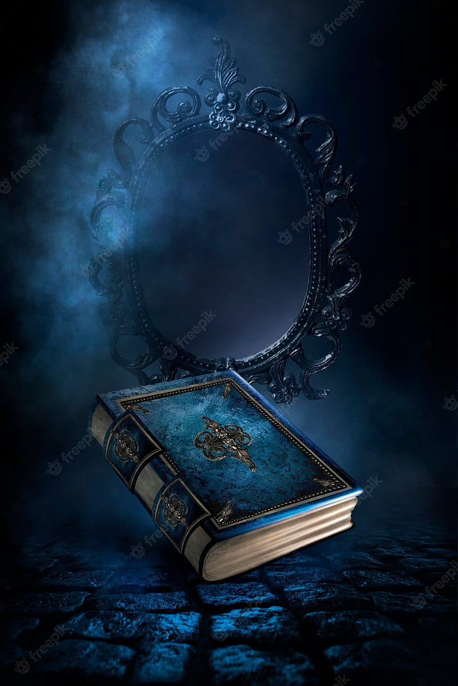
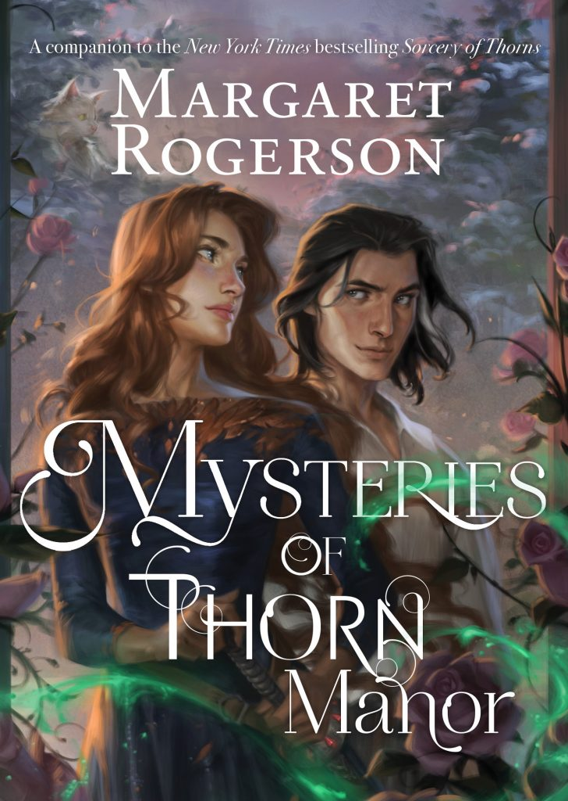
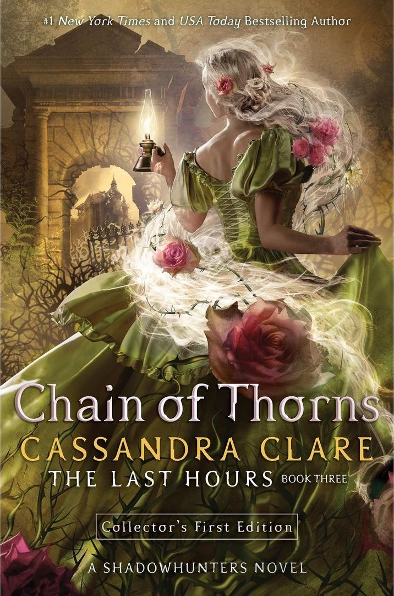
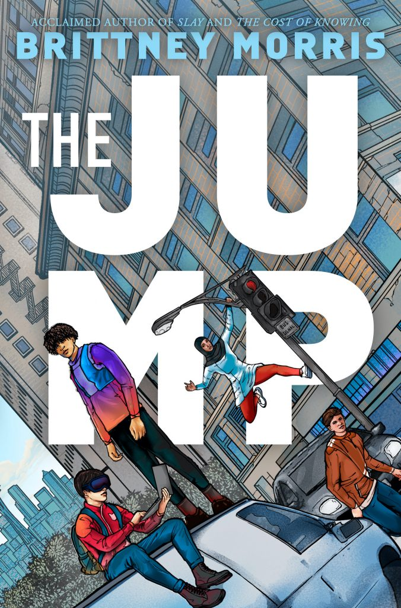
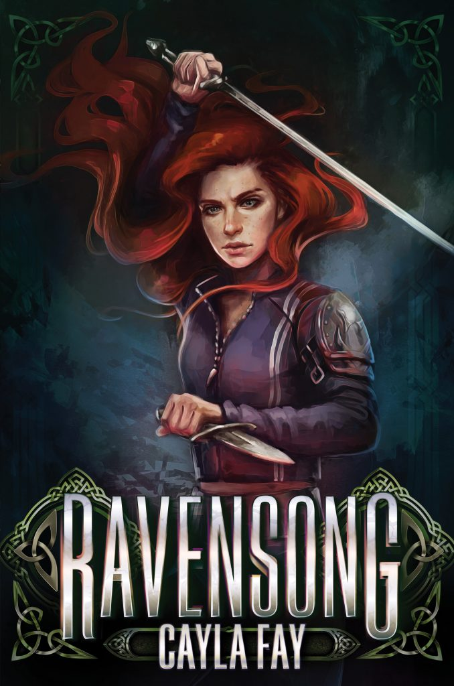
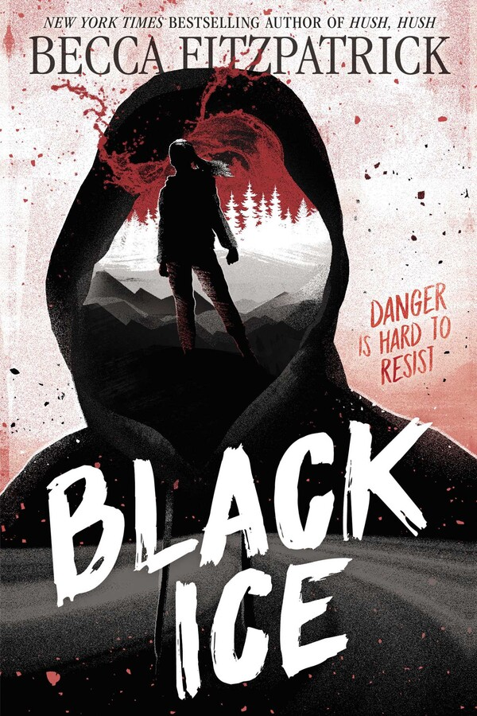

Ewald Arenz “Love on Bad Days”
Is it possible to find love again, or even for the first time, when you are no longer very young and loaded with life experience? A real “feel good” book.
From the first moment, Clara and Elias know that they are made for each other. This changes everything: Elias can no longer suppress the fact that he is in the wrong life with his girlfriend. And it’s time for Clara to give up being alone. The wild luck of the early days is followed by the first test, and the two doubt and fight with and for each other.
Ewald Arenz “Love on Bad Days”

Juli Zeh and Simon Urban “Between Worlds”
Stefan and Theresa decide to start all over again, telling each other about their worlds via email and WhatsApp. You can read a detailed book recommendation here.
Twenty years have passed: When Stefan and Theresa accidentally cross paths in Hamburg, their first reunion ends in disaster. When they were students they were like family to each other, today there is hardly anything they have in common.
Juli Zeh and Simon Urban “Between Worlds”
Bonnie Garmus “A Matter of Chemistry”
Bonnie Garmus has created a literary heroine who was born in the wrong time and is therefore so tremendously timely. She has written a novel that will leave you with a smile. And Elizabeth Zott – she will change your life.
Elizabeth Zott is a woman with the unmistakable demeanor of someone who is not, and never will be, average. But it’s 1961, and the women are wearing shirt dresses and joining garden clubs. No one thinks you’re capable of becoming a chemist. Except for Calvin Evans, the lonely, brilliant Nobel Prize nominee who falls in love with Elizabeth’s mind of all things…
Bonnie Garmus “A Matter of Chemistry”

Invisible Man
Ralph EllisonEncyclopædia Britannica, Inc.
Often confused with H.G. Wells’s science-fiction novella of nearly the same name (just subtract a “The”), Ralph Ellison’s Invisible Man is a groundbreaking novel in the expression of identity for the African American male. The narrator of the novel, a man who is never named but believes he is “invisible” to others socially, tells the story of his move from the South to college and then to New York City. In each location he faces extreme adversity and discrimination, falling into and out of work, relationships, and questionable social movements in a wayward and ethereal mindset. The novel is renowned for its surreal and experimental style of writing that explores the symbolism surrounding African American identity and culture. Invisible Man won the U.S. National Book Award for Fiction in 1953.

Don Quixote
Don QuixotePublic Domain
Miguel de Cervantes’s Don Quixote, perhaps the most influential and well-known work of Spanish literature, was first published in full in 1615. The novel, which is very regularly regarded as one of the best literary works of all time, tells the story of a man who takes the name “Don Quixote de la Mancha” and sets off in a fit of obsession over romantic novels about chivalry to revive the custom and become a hero himself. The character of Don Quixote has become an idol and somewhat of an archetypal character, influencing many major works of art, music, and literature since the novel’s publication. The text has been so influential that a word, quixotic, based on the Don Quixote character, was created to describe someone who is, “foolishly impractical especially in the pursuit of ideals; especially: marked by rash lofty romantic ideas or extravagantly chivalrous action.”
Beloved

Toni MorrisonBernard Gotfryd Photograph Collection, Library of Congress, Washington, D.C. (reproduction no. LC-DIG-gtfy-02425)
Toni Morrison’s 1987 spiritual and haunting novel Beloved tells the story of an escaped slave named Sethe who has fled to Cincinnati, Ohio, in the year 1873. The novel investigates the trauma of slavery even after freedom has been gained, depicting Sethe’s guilt and emotional pain after having killed her own child, whom she named Beloved, to keep her from living life as a slave. A spectral figure appears in the lives of the characters and goes by the same name as the child, embodying the family’s anguish and hardship and making their feelings and past unavoidable. The novel was lauded for addressing the psychological effects of slavery and the importance of family and community in healing. Beloved was awarded the Pulitzer Prize for fiction in 1988.
Mrs. Dalloway

Virginia WoolfNew York World-Telegram & Sun Collection/Library of Congress, Washington, D.C. (neg. no. LC-USZ62-111438)
Possibly the most idiosyncratic novel of this list, Virginia Woolf’s Mrs. Dalloway describes exactly one day in the life of a British socialite named Clarissa Dalloway. Using a combination of a third-person narration and the thoughts of various characters, the novel uses a stream-of-consciousness style all the way through. The result of this style is a deeply personal and revealing look into the characters’ minds, with the novel relying heavily on character rather than plot to tell its story. The thoughts of the characters include constant regrets and thoughts of the past, their struggles with mental illness and post-traumatic stress from World War I, and the effect of social pressures. The novel’s unique style, subject, and time setting make it one of the most respected and regarded works of all time.